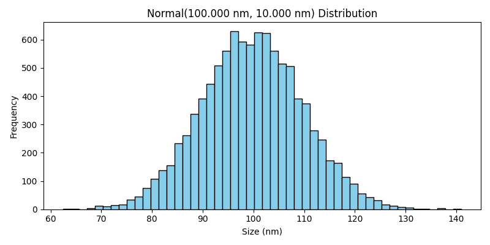
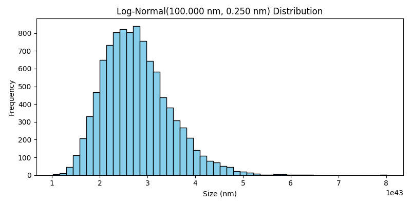
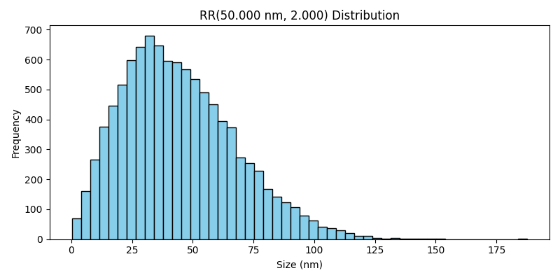
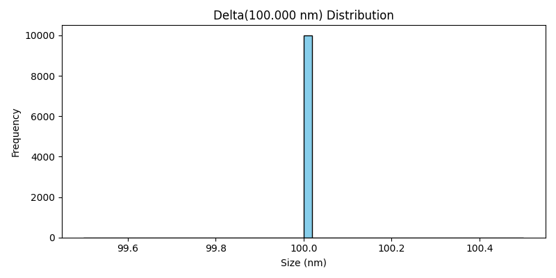
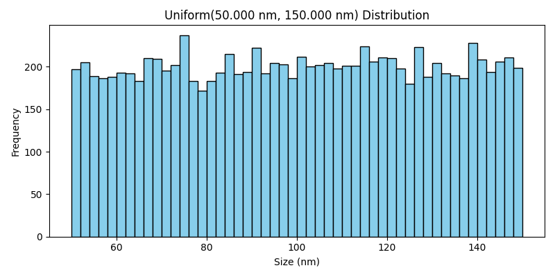

Fluidics#
The FlowCyPy.fluidics package defines the physical input of a simulation.
It describes the geometry of the flow cell, the organization of particle populations, and the statistical distributions used to generate particle properties such as size and refractive index.
Together, these objects define what enters the optical interrogation region and how particles are spatially and temporally distributed before signal generation.
The typical workflow is:
define a
FlowCyPy.fluidics.flow_cell.FlowCellbuild one or more particle populations
collect them in a
FlowCyPy.fluidics.scatterer_collection.ScattererCollectioncombine the collection with the flow cell to create a fluidic configuration
This structure is used throughout FlowCyPy to generate realistic particle arrival statistics and physically consistent event streams.
Flow cell#
The flow cell defines the channel geometry and the hydrodynamic conditions used in the simulation.
It converts the specified sample and sheath flow rates into a focused sample region and provides the velocity field used to model particle transport.
- class FlowCell#
Bases:
pybind11_objectRepresents a rectangular flow cell in which the velocity field is computed from an analytical Fourier series solution for pressure driven flow. The focused sample region is estimated from the volumetric flow rates of the sample and sheath fluids.
The analytical solution for the x direction velocity in a rectangular channel is given by:
\[u(y,z) = \frac{16b^2}{\pi^3 \mu}\left(-\frac{dp}{dx}\right) \sum_{\substack{n=1,3,5,\ldots}}^{\infty} \frac{1}{n^3} \left[ 1 - \frac{ \cosh\left(\frac{n\pi y}{2b}\right) }{ \cosh\left(\frac{n\pi a}{2b}\right) } \right] \sin\left(\frac{n\pi (z+b)}{2b}\right)\]- property area#
Return the cross sectional area of the flow cell.
- property event_scheme#
Return the default event sampling scheme used by the flow cell.
- get_sample_volume(self: FlowCyPy.fluidics.flow_cell.FlowCell, run_time: object) object#
Compute the sample volume that passes through the flow cell during the specified run time.
- Parameters:
run_time (Time) – Total run duration.
- Returns:
Sample volume transported during the run.
- Return type:
Quantity
- property height#
Return the height of the flow cell.
- property sample#
Sample fluid region of the flow cell. This region represents the focused sample area with its dimensions, volume flow rate, maximum flow speed, and average flow speed.
- sample_arrival_times(self: FlowCyPy.fluidics.flow_cell.FlowCell, n_events: SupportsInt, run_time: object, particle_flux: SupportsFloat = 0.0) object#
Sample event arrival times over a specified run duration using the flow cell’s configured event scheme.
Configured schemes#
"uniform-random"Draw
n_eventsrandom times uniformly over the run duration and sort them."linear"Generate
n_eventslinearly spaced times over the run duration. This is particularly useful for debugging and deterministic tests."poisson"Generate arrival times from a Poisson process with rate
particle_flux. In this mode,n_eventsis ignored and the number of returned events is stochastic.
- param n_events:
Number of events to generate for deterministic schemes.
- type n_events:
int
- param run_time:
Total duration over which events are sampled.
- type run_time:
Time
- param particle_flux:
Event rate in events per second used only when
event_scheme="poisson".- type particle_flux:
float, optional
- returns:
Event arrival times expressed in seconds.
- rtype:
Quantity
- sample_transverse_profile(self: FlowCyPy.fluidics.flow_cell.FlowCell, n_samples: SupportsInt) tuple#
Sample the transverse velocity profile of the focused sample region.
This method draws random transverse coordinates within the sample region and evaluates the corresponding local axial velocity in the channel.
By default, coordinates are sampled with probability proportional to the local axial velocity. This gives flux-weighted trajectory sampling. If the flow cell was constructed with
transverse_sampling_scheme="uniform-random", coordinates are sampled uniformly over the sample region instead.- Parameters:
n_samples (int) – Number of transverse samples to generate.
- Returns:
Tuple containing:
y coordinates
z coordinates
local axial velocities
- Return type:
tuple
- property sheath#
Sheath fluid region of the flow cell. This region represents the remaining sheath area with its dimensions, volume flow rate, maximum flow speed, and average flow speed.
- property transverse_sampling_scheme#
Return the transverse position sampling scheme used by the flow cell.
- property width#
Return the width of the flow cell.
Scatterer collection#
The scatterer collection is the container that stores all particle populations present in the simulated sample.
It provides a convenient interface for combining multiple populations, applying dilution, and passing the resulting sample definition to the fluidics engine.
- class ScattererCollection(populations=None)[source]#
Bases:
objectDefines and manages the diameter and refractive index distributions of scatterers (particles) passing through a flow cytometer. This class generates random scatterer diameters and refractive indices based on a list of provided distributions (e.g., Normal, LogNormal, Uniform, etc.).
- Parameters:
populations (List[BasePopulation])
- add_population(*population)[source]#
Add one or more populations to the collection.
- Parameters:
*population (BasePopulation) – Population objects to append.
- Returns:
The ScattererCollection instance (to support chaining).
- Return type:
- property concentrations: List[Concentration]#
Gets the concentration of each population in the ScattererCollection instance.
- Returns:
A list of concentrations for each population.
- Return type:
List[Concentration]
- dilute(factor)[source]#
Dilutes the populations in the flow cytometry system by a given factor.
- Parameters:
factor (float) – The dilution factor to apply to each population. For example, a factor of 0.5 reduces the population density by half.
- Returns:
The method modifies the populations in place.
- Return type:
None
Notes
This method iterates over all populations in the system and applies the dilute method of each population.
The specific implementation of how a population is diluted depends on the dilute method defined in the population object.
Examples
Dilute all populations by 50%: >>> system.dilute(0.5)
- get_population_ratios()[source]#
Get the ratios of each population’s concentration to the total concentration.
- Returns:
A list of concentration ratios for each population.
- Return type:
list[float]
- set_concentrations(values)[source]#
Sets the concentration of each population in the ScattererCollection instance.
- Parameters:
values (Union[List[Concentration], Concentration]) – A list of concentrations to set for each population, or a single concentration value to set for all populations.
- Raises:
ValueError – If the length of the values list does not match the number of populations or if any concentration has an incorrect dimensionality.
- Return type:
None
Population models#
Population classes describe the physical properties of the particles present in the sample.
A population typically specifies its concentration, refractive index model, diameter distribution, and the sampling strategy used to instantiate individual particles during simulation.
Sphere population#
Use this class for homogeneous spherical particles.
- class SpherePopulation#
Bases:
BasePopulationSpherical population with distribution based physical parameters.
See also
CoreShellPopulationpopulation with separate core and shell properties.
- sample(self: FlowCyPy.fluidics.populations.SpherePopulation, number_of_samples: SupportsInt) dict#
Sample particle properties from the population distributions.
- Parameters:
number_of_samples (int) – Number of particles to sample.
- Returns:
Dictionary containing sampled arrays with units:
”MediumRefractiveIndex” : RIU
”RefractiveIndex” : RIU
”Diameter” : meter
- Return type:
dict[str, pint.Quantity]
Core-shell population#
Use this class for layered particles composed of a core and a shell with distinct optical properties.
- class CoreShellPopulation#
Bases:
BasePopulationCore shell population with distribution based physical parameters.
The shell thickness is sampled independently from the core diameter. If you need a constrained relationship (e.g., total diameter fixed), implement a dedicated distribution or a custom population class that enforces the constraint.
- sample(self: FlowCyPy.fluidics.populations.CoreShellPopulation, number_of_samples: SupportsInt) dict#
Sample particle properties from the population distributions.
- Parameters:
number_of_samples (int) – Number of particles to sample.
- Returns:
Dictionary containing sampled arrays with units:
”MediumRefractiveIndex” : RIU
”CoreRefractiveIndex” : RIU
”ShellRefractiveIndex” : RIU
”CoreDiameter” : meter
”ShellThickness” : meter
- Return type:
dict[str, pint.Quantity]
Distribution models#
Distribution classes define how scalar particle properties are sampled.
They are commonly used for particle diameter, refractive index, or medium refractive index.
These models make it possible to represent monodisperse, weakly polydisperse, or broadly distributed populations within a consistent API.
Normal#
The normal distribution generates values distributed around a mean with symmetric dispersion.
It is appropriate when fluctuations are approximately Gaussian and negative values are either physically excluded by bounds or unlikely within the chosen parameter range.
{kind=link}

Log-normal#
The log-normal distribution generates strictly positive values whose logarithm follows a normal distribution.
It is commonly used for particle sizes and other positive quantities with right-skewed variation.
{kind=link}

Rosin-Rammler#
The Rosin-Rammler distribution is widely used to model particle size distributions in dispersed materials.
It is particularly useful when the population contains many small particles and progressively fewer large particles.
{kind=link}

Delta#
The delta distribution represents a fixed value with no dispersion.
It is useful for monodisperse reference populations or for parameters that should remain constant across all simulated particles.
{kind=link}

Uniform#
The uniform distribution samples values evenly between a lower and an upper bound.
It is appropriate when all values within an interval are considered equally likely.
{kind=link}
